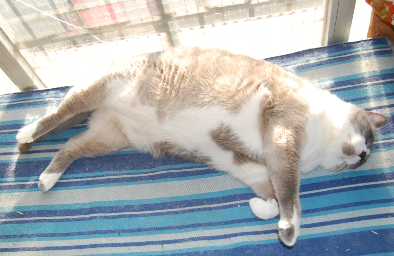

Habitat
Pueden encontrarse en casi cualquier lugar del mundo, exceptuando la Antártida.
Se pueden encontrar domésticos o salvajes
Doméstico
Su presencia es un hecho en sitios poblados por humanos, dado que la relación entre ambos tiene una larga historia. La domesticación de Felis silvestrus catus pudo tener origen en la necesidad humana de contrarrestar las plagas de roedores y otras especies invasoras, y hasta la actualidad la relación suele ser muy cercana
Salvaje
Uno de estos puede ser el Gato Montés (Felis silvestris), también conocido como gato salvaje o, más formalmente, como gato montés euroasiático, es una especie de mamífero carnívoro salvaje de la familia de los félidos y que habita en Eurasia y África.
Tiene muchas subespecies, como el gato montés europeo (Felis silvestris silvestris), el gato salvaje asiático (Felis silvestris ornata) y el gato salvaje africano (Felis silvestris lybica). Se pueden hibridar con los gatos domésticos que han sido abandonados en la naturaleza o se han asilvestrado
Hábitos alimenticios
Los ejemplares bien alimentados pueden cazar y matar aves, ratones, ratas, largartos y otros pequeños animales en las inmediaciones, para luego mostrar el trofeo de caza a sus dueños. El motivo por el cual lo hacen no está totalmente claro, pero se cree que esta acción está relacionada con los comportamientos de creación de lazos afectivos. Es probable que esperen ser elogiados por su contribución simbólica al grupo. Se sabe que, en la vida salvaje, incluso un macho puede compartir su caza con miembros de su familia. El obsequio de piezas por parte de un animal bien alimentado puede ser usual, e interpretarse como un gesto de cariño y familiaridad.
Debido a su instinto cazador, los gatos callejeros son considerados una plaga en muchos países. En algunas zonas, se requiere que los gatos domésticos sean mantenidos dentro del hogar a toda hora, ya que pueden ser peligrosos para las especies de aves locales en peligro de extinción. Algunos dueños optan por colocarles una campanilla al animal para advertirle a su presa sobre su acercamiento.
Reproducción
Los gatos domésticos se reproducen con varios individuos a lo largo de su vida. A menudo, los machos pelean para aparearse con una hembra y quien gana la lucha se gana también el derecho de aparearse con la hembra en cuestión.
La hembra espera un período de 64-67 días que dura la gestación de los gatitos, que suelen ser entre 3 y 5 por cada parto. La madre los acicala con cuidado y amamanta hasta que pueden consumir alimentos sólidos.
Conservación
A diferencia del doméstico, el gato salvaje fue exterminado por el ser humano en numerosas regiones del centro de Europa en el transcurso del siglo pasado, y hoy en día no se encuentra en gran número más que en los montes Cárpatos
Se encuentra protegido desde hace varios años mediante su inclusión en el anexo II del convenio CITES
En la península ibérica su distribución y su número se han reducido enormemente; históricamente ocupaba la práctica totalidad del territorio ibérico, y en la actualidad sigue presente en prácticamente todas las provincias españolas y portuguesas, pero solo en zonas de bosque.
Se cree que su población europea está en franca regresión aunque, quizás por la dificultad de estudio mencionada, la UICN lo incluye en su Lista Roja como amenazado
Tabla de información
| Gato doméstico | ||

|
Estado de conservación | Domesticado |
| Taxonomía | ||
| Reino | Animalia | |
| Filo | Chordata | |
| Subfilo | Vertebrata | |
| Clase | Mammalia | |
| Subclase | Theria | |
| Infraclase | Placentalia | |
| Orden | Carnivora | |
| Suborden | Feliformia | |
| Familia | Felidae | |
| Subfamilia | Felinae | |
| Género | Felis | |
| Especie | F.silvestris | |
| Subespecie | F.s. catus | |
| Sinonimia | ||
|
|
||